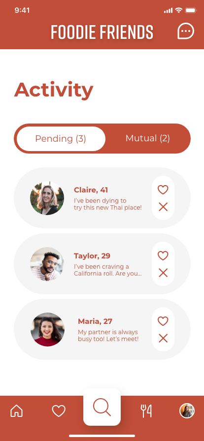
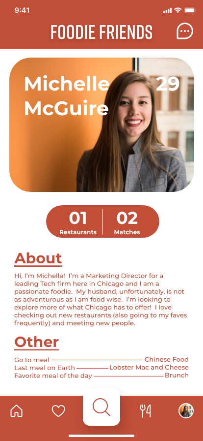
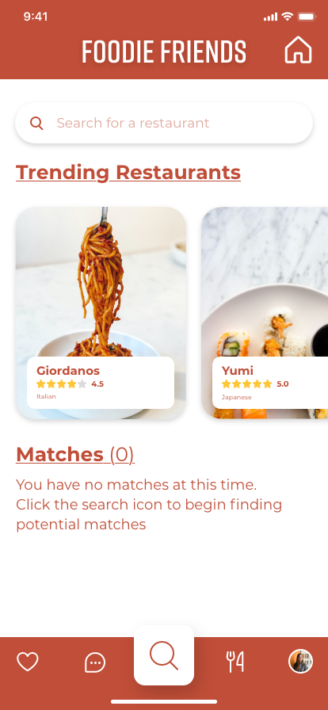
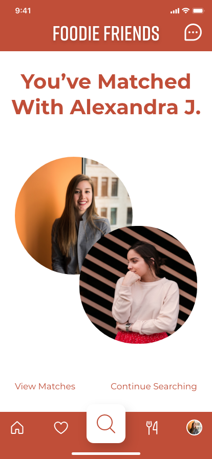

"We believe that food is a common connection among all people"
Overview
Foodie Friends is an app designed for foodies who find it challenging
to meet people and make connections.
What happens when schedules don’t align with your existing friends or
significant other or maybe you just don’t share similar tastes, but you still really want to try
that new restaurant. We know the majority of people do not want to dine alone?
Foodies need an easier way to try new foods and restaurants when
their peers can’t join them in the experience. With this in mind
we decided a solution would be to connect like-minded people based
on food and restaurant preferences.
The goal of this project was to create an app that connects people
through food or restaurant preferences.
Role
UX Designer UX Reseacher Project Manager
Skills
User Research Visual Design Prototyping Testing
Tools
Figma InVision Adobe XD Trello
01
Research
Background
Focus on matching people based off food
interests Matching people based off restaurants they want to try Seeks to use food to
form connections
“I don’t like to eat out by myself. I think it’s awkward to sit
alone.”
Research Goal
To create an app that connects people through food or
restaurant preferences
“People around you can make eating more enjoyable”
Research Questions
1. How do you
discover/choose what foods or restaurants
to eat? 2. What factors are important in deciding a
restaurant to eat at? 3. How do you
currently make connections with people?
“I would be comfortable meeting strangers if there was a feature
that would verify users based off mutual connections”
Problem Statement
We believe that food is a common connection between all
people. Foodies need a way to
easily try new foods, discover new restaurants and form new relationships. How might we connect
like-minded people over the common interest of food?
02
Definition & Ideation
Determining the flow required some extensive discussion about how we wanted
the swipe feature to act. We discussed types of matches and concluded that both “pending” and “mutual”
matches were important to distinguish.
The team decided to use dot voting to determine which features we wanted to
include in our app. We discussed including personality quiz, local restaurant coupons, and connecting
based off similar budgets. We began to focus on the features that were of the highest priority and
the lowest complexity. For example, we wanted to include an “about me” section that would allow others
to get to know each person as much as they possibly can without being overwhelmed with information.
We began to focus on the features that were of the highest
priority and the lowest complexity. We wanted to include an “about me” section that
would allow others to get to know each person as much as they possibly can without being overwhelmed
with information.

Matches
This includes the two types of matches, "pending" and
"mutual." Pending matches are those who have already swiped yes for the user, waiting for a reply. Mutual, is someone who swiped yes for the user, and the user has accepted.

About Me Screen
This includes contents from the app's personality
quiz, matches, restaurants, age, and name.
03
Prototyping
Each member of the team created paper prototypes and upon review the team
decided that each member had a strong understanding of how they wanted a section to look, and we chose
to pick one idea from each member to form our lo-fidelity prototype.
Our tasks for testing included whether a user could create a
profile, land
on swipe mode’s suggested candidates, and match with candidates.
Through testing, we found that our main issue was how our
navigation bar
was laid out. We chose to swap the home button with the chat button, and move the home button to
the bottom left to create a smoother experience.

Before

After
05
Conclusion
Our next steps would be to develop more features such as: group
chat /
group matching - for users to meet up in groups, workplace specific searches for bigger
companies,
verifying users authenticity and a mutual connection feature.
At the end of this case study, final feedback was given by an
experienced
product designer. I decided to take this feedback and on my own time begin reworking some UI
elements. A
primary change included switch typography from Rift (which is an all caps typography) to
Montserrat.
This was a decision led by accessibility concerns with an all caps font. (All wireframes in this
case
study page are from the reworked UI.